Last updated: 2022-09-27
Checks: 7 0
Knit directory: Fetal-oxygenation-study/
This reproducible R Markdown analysis was created with workflowr (version 1.7.0). The Checks tab describes the reproducibility checks that were applied when the results were created. The Past versions tab lists the development history.
Great! Since the R Markdown file has been committed to the Git repository, you know the exact version of the code that produced these results.
Great job! The global environment was empty. Objects defined in the global environment can affect the analysis in your R Markdown file in unknown ways. For reproduciblity it’s best to always run the code in an empty environment.
The command set.seed(20220826) was run prior to running the code in the R Markdown file. Setting a seed ensures that any results that rely on randomness, e.g. subsampling or permutations, are reproducible.
Great job! Recording the operating system, R version, and package versions is critical for reproducibility.
Nice! There were no cached chunks for this analysis, so you can be confident that you successfully produced the results during this run.
Great job! Using relative paths to the files within your workflowr project makes it easier to run your code on other machines.
Great! You are using Git for version control. Tracking code development and connecting the code version to the results is critical for reproducibility.
The results in this page were generated with repository version b4f0849. See the Past versions tab to see a history of the changes made to the R Markdown and HTML files.
Note that you need to be careful to ensure that all relevant files for the analysis have been committed to Git prior to generating the results (you can use wflow_publish or wflow_git_commit). workflowr only checks the R Markdown file, but you know if there are other scripts or data files that it depends on. Below is the status of the Git repository when the results were generated:
Ignored files:
Ignored: .DS_Store
Ignored: .RData
Ignored: .Rhistory
Ignored: analysis/.DS_Store
Ignored: data/.DS_Store
Ignored: output/.DS_Store
Untracked files:
Untracked: data/FOX_REDCap_metadata.csv
Untracked: data/HK_genes.txt
Untracked: data/MSigDB/
Untracked: data/sample_metadata.csv
Untracked: output/camera_GO.csv
Untracked: output/camera_c2.csv
Untracked: output/camera_hallmark.csv
Untracked: output/goana_all.csv
Untracked: output/goana_treat.csv
Untracked: output/voomQual.csv
Untracked: output/voomQual_treat.csv
Unstaged changes:
Modified: analysis/FOX_PE_RUVSeq.Rmd
Note that any generated files, e.g. HTML, png, CSS, etc., are not included in this status report because it is ok for generated content to have uncommitted changes.
These are the previous versions of the repository in which changes were made to the R Markdown (analysis/FOX_limma.Rmd) and HTML (docs/FOX_limma.html) files. If you’ve configured a remote Git repository (see ?wflow_git_remote), click on the hyperlinks in the table below to view the files as they were in that past version.
| File | Version | Author | Date | Message |
|---|---|---|---|---|
| Rmd | b4f0849 | Sally Beard | 2022-09-27 | update index and add new analysis |
The sequence data used in the following analysis was generated at AGRF for the FOX study. RNA was isolated from whole blood PAXgene tubes and Illumina’s TruSeq stranded RNA sample preparation kit with globin depletion was used to prepare libraries for sequencing. Libraries were pooled and clustered using the Illumina cBot system, followed by sequencing on the Illumina HiSeq 2000 platform to obtain 50 base pair single-end reads. Each library was split over two lanes, which generated two sequence files per sample. Fastq files were aligned against the human genome GRCh38 using hisat2, then files were sorted with SAMtools, before reads aligning to exons were counted using htseq with default parameters. Technical duplicates run in different sequencing lanes overlapped on MDS plots, indicating there was no batch effect due to lane, therefore in this analysis counts from technical duplicates were summed for further analysis.
#import required libraries
library(limma)
library(Glimma)
library(edgeR)
library(tidyverse)
library(EDASeq)
library(RColorBrewer)
library(tableone)
library(knitr)
library(kableExtra)
library(Homo.sapiens)
library(patchwork)
library(NMF)
library(here)
library(ggrepel)
library(clusterProfiler)Import sample information and create table of characteristics.
metadata <- read.csv("data/FOX_REDCap_metadata.csv")
#create a variable list
vars <- c("Age", "BMI", "Diabetes", "Hypertension","GA_sampling", "GA_delivery", "Birthweight", "Birthweight_centile", "Sex", "Cord_blood_pH")
#create Table 1 stratified by case-control
tableOne <- CreateTableOne(vars = vars, strata = "Case", data = metadata, testNonNormal = kruskal.test)
kable_styling(kableone(tableOne, caption="Table 1: Patient characteristics for FOX cases included in RNA-seq analysis", nonnormal = c("Birthweight_centile", "Cord_blood_pH", "BMI"), varLabels = TRUE, dropEqual = TRUE))| Case | Control | p | test | |
|---|---|---|---|---|
| n | 129 | 79 | ||
| Age (mean (SD)) | 32.23 (5.51) | 29.91 (5.76) | 0.004 | |
| BMI (median [IQR]) | 25.00 [22.00, 30.00] | 22.00 [21.00, 25.00] | <0.001 | nonnorm |
| Diabetes (%) | 0.126 | |||
| GDM | 12 ( 9.3) | 4 ( 5.2) | ||
| None | 110 (85.3) | 73 ( 94.8) | ||
| T1DM | 2 ( 1.6) | 0 ( 0.0) | ||
| T2DM | 5 ( 3.9) | 0 ( 0.0) | ||
| Hypertension (%) | <0.001 | |||
| Chronic_Essential_HT | 12 ( 9.3) | 0 ( 0.0) | ||
| Gestational_HT | 10 ( 7.8) | 0 ( 0.0) | ||
| None | 45 (34.9) | 77 (100.0) | ||
| Preeclampsia | 62 (48.1) | 0 ( 0.0) | ||
| GA_sampling (mean (SD)) | 30.39 (2.17) | 29.98 (2.21) | 0.209 | |
| GA_delivery (mean (SD)) | 30.39 (2.17) | 39.52 (1.03) | <0.001 | |
| Birthweight (mean (SD)) | 1070.09 (330.97) | 3545.22 (363.38) | <0.001 | |
| Birthweight_centile (median [IQR]) | 5.50 [1.30, 14.70] | 72.00 [61.00, 84.00] | <0.001 | nonnorm |
| Sex (%) | 76 (58.9) | 40 ( 51.9) | 0.406 | |
| Cord_blood_pH (median [IQR]) | 7.28 [7.23, 7.30] | 7.25 [7.20, 7.28] | 0.104 | nonnorm |
Set up DGElist object for downstream analysis and add sample-specific information.
#list count files from working directory
files = list.files("/Users/beards/rnaseq_FOX/FOX_case_control_counts", pattern = "[counts]$")
#edgeR has a function readDGE for combining separate count files into one matrix of counts in one step
counts <- readDGE(files, path = "/Users/beards/rnaseq_FOX/FOX_case_control_counts", columns = c(1,3), header = FALSE)
#remove meta tags as library size includes counts from the meta tags
MetaTags <- grep("^__", rownames(counts))
counts <- counts[-MetaTags, ]
#update library size to reflect mapped reads
counts$samples$lib.size <- colSums(counts$counts)
#obtain sample names from file names
sample <- strsplit2(files, "_")[,1]
counts$samples$sample <- as.factor(sample)
samplenames <- counts$samples$sample
#sum counts from technical replicates
counts <- sumTechReps(counts, ID=samplenames)
#Add sample-level information related to experimental design (and possible confounding factors) to the count matrix
counts$samples$site <- as.factor(metadata$Site)
counts$samples$sample <- as.factor(metadata$sample)
counts$samples$sex <- as.factor(metadata$Sex)
counts$samples$hypertension <- as.factor(metadata$Hypertension)
counts$samples$diabetes <- as.factor(metadata$Diabetes)
counts$samples$steroids <- as.factor(metadata$Antenatal_steroids)
counts$samples$group <- as.factor(metadata$Case)
#import information for each gene
geneid <- rownames(counts)
genes <- select(Homo.sapiens, keys=geneid, columns=c("SYMBOL", "TXCHROM", "ENTREZID"),
keytype="ENSEMBL")
genes <- genes[!duplicated(genes$ENSEMBL),]
counts$genes <- genes
#remove genes without ENTREZ IDs
keep <- !is.na(counts$genes$ENTREZID) & !is.null(counts$genes$ENTREZID)
counts <- counts[keep, ]
#generate library statistics
cpm <- cpm(counts)
lcpm <- cpm(counts, log=TRUE)
L <- mean(counts$samples$lib.size) * 1e-6
M <- median(counts$samples$lib.size) * 1e-6Genes with no or low counts are unlikely to be biologically important, they provide little evidence for differential expression, and interfere with statistical approximations, so they were filtered out before performing the analysis. Genes with low or no counts (counts per million reads that corresponded to less than ~10 reads in any 79 samples (smallest group size)) were filtered out of the analysis, based on the recommendations in the edgeR documentation. Both smaller (>2) and larger (<100) thresholds were tested, lower thresholds detected more significant genes on average, higher thresholds detected less differentially expressed genes, but those that were detected are likely to be more robust. The threshold chosen for the analysis is commonly used in the literature and provided a good compromise.
#filter out genes with low expression
keep.exprs <- filterByExpr(counts, group=counts$samples$group)
counts_FOX <- counts[keep.exprs,, keep.lib.sizes=FALSE]
samplenames <- colnames(counts_FOX)Plotting the distribution of log-CPM values (below) showed that before filtering (A) many genes in each sample had low or no expression, with negative log-CPM values. These genes were removed from the analysis after filtering (B). Filtering didn’t completely improve the uniformity between samples however.
#make density plots for counts before and after filtering out genes with low expression
par(mfrow = c(1,1))
lcpmz <- lcpm
lcpm.cutoff <- log2(10/M + 2/L)
nsamples <- ncol(counts)
col <- scales::hue_pal()(nsamples)
plot(density(lcpm[,1]), col=col[1], lwd=2, ylim=c(0,0.4), las=2, main="", xlab="")
title(main="A. Raw data", xlab="Log-cpm")
abline(v=lcpm.cutoff, lty=3)
for (i in 2:nsamples){
den <- density(lcpm[,i])
lines(den$x, den$y, col=col[i], lwd=2)
}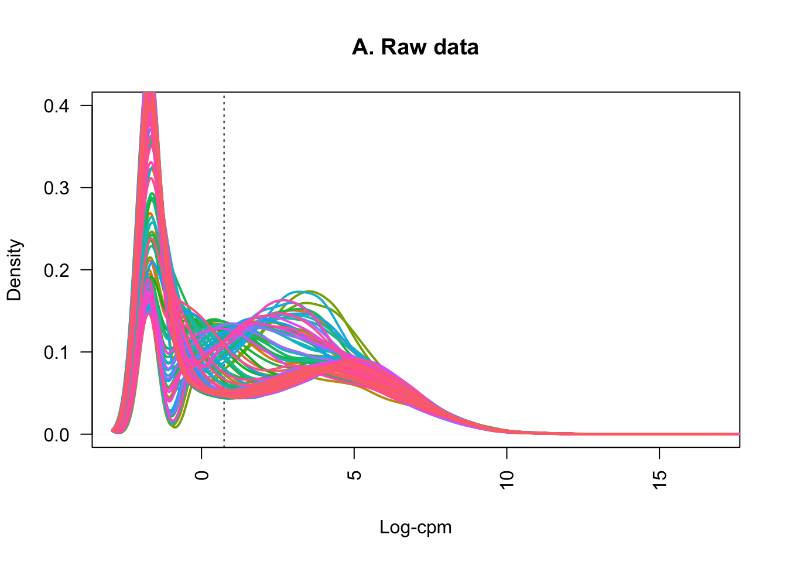
lcpm2 <- cpm(counts_FOX, log=TRUE)
plot(density(lcpm2[,1]), col=col[1], lwd=2, ylim=c(0,0.4), las=2, main="", xlab="")
title(main="B. Filtered data", xlab="Log-cpm")
abline(v=lcpm.cutoff, lty=3)
for (i in 2:nsamples){
den <- density(lcpm2[,i])
lines(den$x, den$y, col=col[i], lwd=2)
}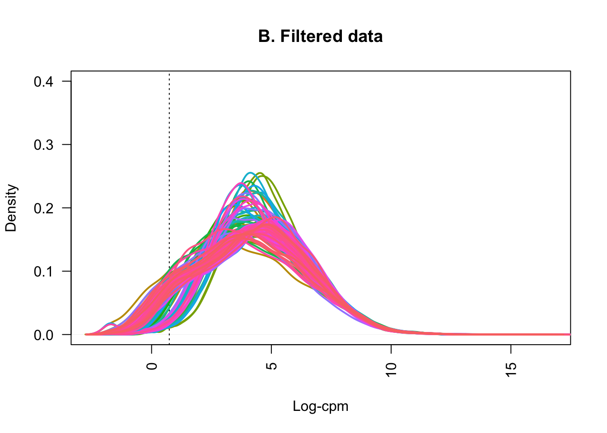
We suspected that effective library size might have been contributing to the lack of uniformity between samples in the density plots. Colouring the samples by effective library size showed that the distribution of counts was similar for samples with larger libraries (8-12 million reads) where two peaks were seen after filtering, one at logCPM ~-1.5 and one at 5 (B). Samples with smaller libraries tended to have a single peak between ~3 and 5 log-CPM (B).
#create binds for effective samples size
lib.size <- counts_FOX$samples$lib.size
#set up cut-off values
breaks <- c(0,2000000,4000000,6000000,8000000,10000000,12000000)
#specify bin labels
tags <- c("[0-2m)", "[2-4m)", "[4-6m)", "[6-8m)", "[8-10m)", "[10-12m)")
#bucket library sizes into bins
group_tags <- cut(lib.size,
breaks=breaks,
include.lowest=TRUE,
right=FALSE,
labels=tags)
#add new tags to count matrix
counts_FOX$samples$lib_size <- as.factor(group_tags)
#make density plots for counts before and after filtering out genes with low expression
par(mfrow = c(1,1))
lcpmz <- lcpm
lcpm.cutoff <- log2(10/M + 2/L)
nsamples <- ncol(counts)
col.lib <- counts_FOX$samples$lib_size
levels(col.lib) <- brewer.pal(nlevels(col.lib), "Set1")
plot(density(lcpmz[,1]), col = as.character(col.lib[1]), lwd = 1, ylim = c(0, 0.4), las = 2,
main = "", xlab = "")
title(main = "A. Raw data", xlab = "Log-cpm")
abline(v = lcpm.cutoff, lty = 3)
for (i in 2:nsamples){
den <- density(lcpmz[,i])
lines(den$x, den$y, col = as.character(col.lib[i]), lwd = 1)
}
legend("topright",legend=levels(counts_FOX$samples$lib_size), col=levels(col.lib), pch=16, title ="Library size (millions)")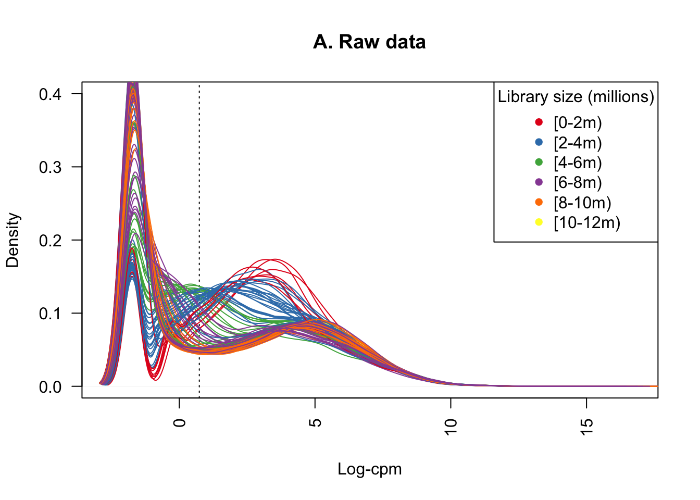
lcpmy <- cpm(counts_FOX, log=TRUE)
plot(density(lcpmy[,1]), col = as.character(col.lib[1]), lwd = 1, ylim = c(0, 0.4), las = 2,
main = "", xlab = "")
title(main = "B. Filtered data", xlab = "Log-cpm")
abline(v = lcpm.cutoff, lty = 3)
for (i in 2:nsamples){
den <- density(lcpmy[,i])
lines(den$x, den$y, col = as.character(col.lib[i]), lwd = 1)
}
legend("topright",legend=levels(counts_FOX$samples$lib_size), col=levels(col.lib), pch=16, title ="Library size (millions)" )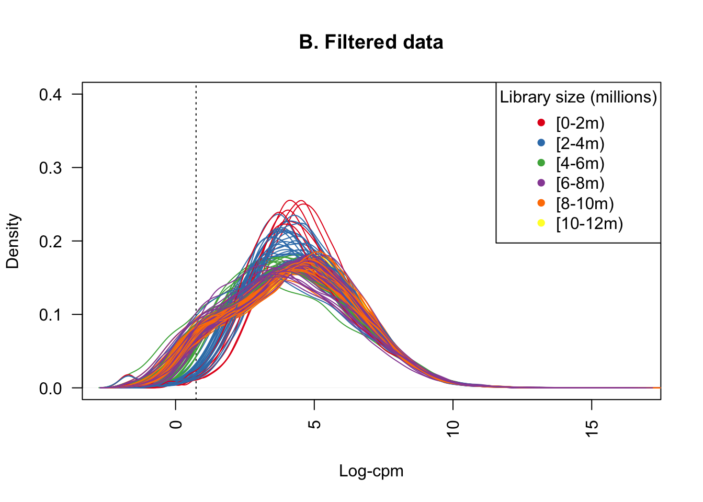
TMM normalisation was applied to account for any highly expressed genes monopolising the sequencing and to account for the underlying differences in the distributions of expressed transcripts between samples.
#apply TMM normalisation
norm_FOX <- calcNormFactors(counts_FOX, method = "TMM")Although ~30 million reads per sample were obtained from the sequencing, effective library sizes varied from around 2 million reads to more than 10 million reads, with the median just under 7 million reads (A). This suggests we are only likely to capture the most abundant maternal RNAs. The range and distribution of expression values look fairly uniform between samples, which is what we expect, and TMM normalisation further improves this.
dat <- data.frame(lib = norm_FOX$samples$lib.size,
status = norm_FOX$samples$group,
sample = colnames(norm_FOX))
p1 <- ggplot(dat, aes(x = sample, y = lib, fill = status)) +
geom_bar(stat = "identity") +
theme(axis.text.x = element_text(angle = 45, hjust = 1)) +
labs(x = "Sample", y = "Library size",
fill = "Preeclampsia status", title = "A. Library size after filtering") +
geom_hline(yintercept = median(dat$lib), linetype = "dashed") +
scale_x_discrete(limits = dat$sample)
dat <- reshape2::melt(cpm(norm_FOX, normalized.lib.sizes = FALSE, log = TRUE),
value.name = "cpm")
dat$status <- rep(norm_FOX$samples$group, each = nrow(norm_FOX))
colnames(dat)[2] <- "sample"
p2 <- ggplot(dat, aes(x = sample, y = cpm, fill = status)) +
geom_boxplot(show.legend = FALSE, outlier.size = 0.75) +
theme(axis.text.x = element_text(angle = 45, hjust = 1, size = 7)) +
labs(x = "Sample", y = "Log-CPM",
fill = "Preeclampsia status", title = "B. Expression values after filtering") +
geom_hline(yintercept = median(dat$lib), linetype = "dashed")
dat <- reshape2::melt(cpm(norm_FOX, normalized.lib.sizes = TRUE, log = TRUE),
value.name = "cpm")
dat$status <- rep(norm_FOX$samples$group, each = nrow(norm_FOX))
colnames(dat)[2] <- "sample"
p3 <- ggplot(dat, aes(x = sample, y = cpm, fill = status)) +
geom_boxplot(show.legend = FALSE, outlier.size = 0.75) +
theme(axis.text.x = element_text(angle = 45, hjust = 1, size = 7)) +
labs(x = "Sample", y = "Log-CPM",
fill = "Status", title = "C. Expression values after normalisation") +
geom_hline(yintercept = median(dat$lib), linetype = "dashed")
p1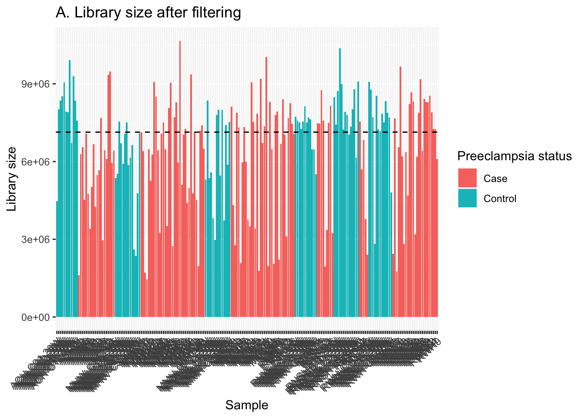
p2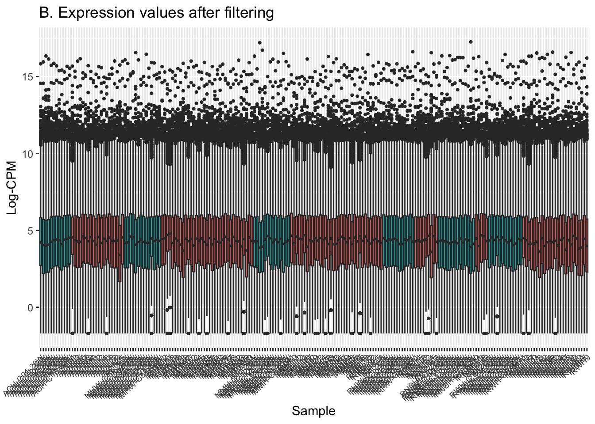
p3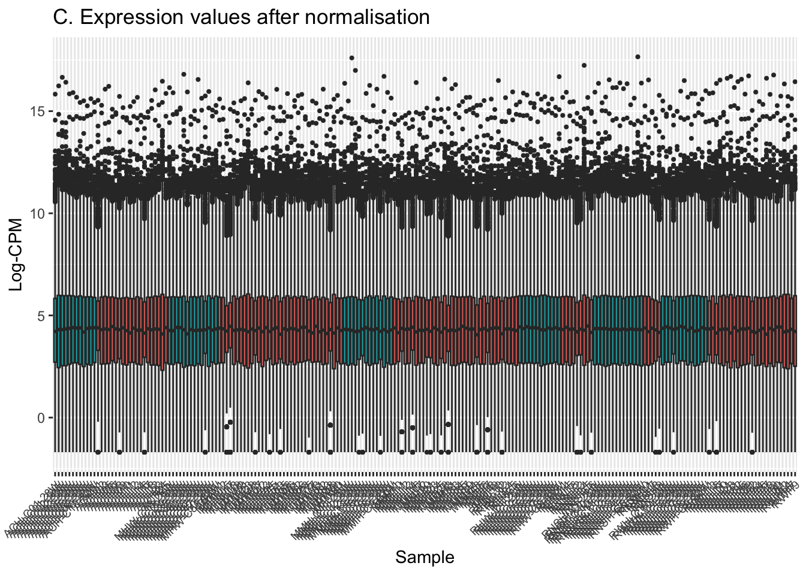
Multi-dimensional scaling (MDS) plots show the largest sources of variation in the data. They are a good way of identifying structure in the data and exploring relationships between samples. The following plots examine the first four principle components coloured for known features of the data including preeclampsia status, fetal sex, collection site, diabates status, steroid treatment prior to blood collection and library size. The samples did not cluster by known features of the data, except library size. The lack of clustering by case-control status in any of the first four principle components suggests we might not find any differentially expressed genes. The MDS plots suggest that the largest source of variation in the data is library size, as there is a strong trend towards increasingly smaller library sizes from left to right across the first dimension.
dims <- list(c(1,2), c(1,3), c(2,3), c(3,4))
vars <- c("group", "sex", "site", "diabetes", "steroids", "lib_size")
patches <- vector("list", length(vars))
for(i in 1:length(vars)){
p <- vector("list", length(dims))
for(j in 1:length(dims)){
mds <- plotMDS(cpm(norm_FOX, log = TRUE), top = 1000, gene.selection="common",
plot = FALSE, dim.plot = dims[[j]])
dat <- tibble::tibble(x = mds$x, y = mds$y,
sample = samplenames,
variable = pull(norm_FOX$samples, vars[i]))
p[[j]] <- ggplot(dat, aes(x = x, y = y, colour = variable)) +
geom_text(aes(label = sample), size = 2.5) +
labs(x = glue::glue("Principal component {dims[[j]][1]}"),
y = glue::glue("Principal component {dims[[j]][2]}"),
colour = vars[i])
}
patches[[i]] <- wrap_elements(wrap_plots(p, ncol = 2, guides = "collect") +
plot_annotation(title = glue::glue("Coloured by: {vars[i]}")) &
theme(legend.position = "bottom"))
}
patches[[1]]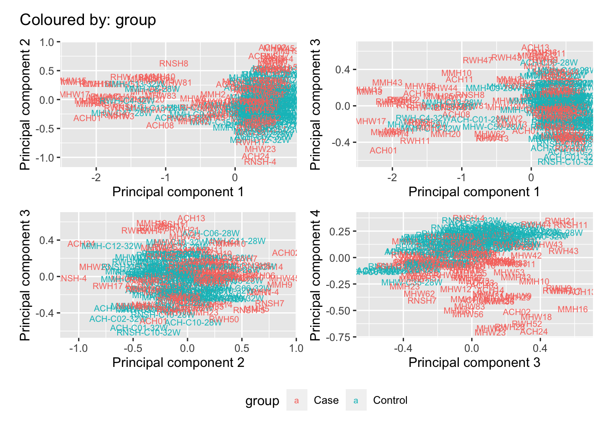
[[2]]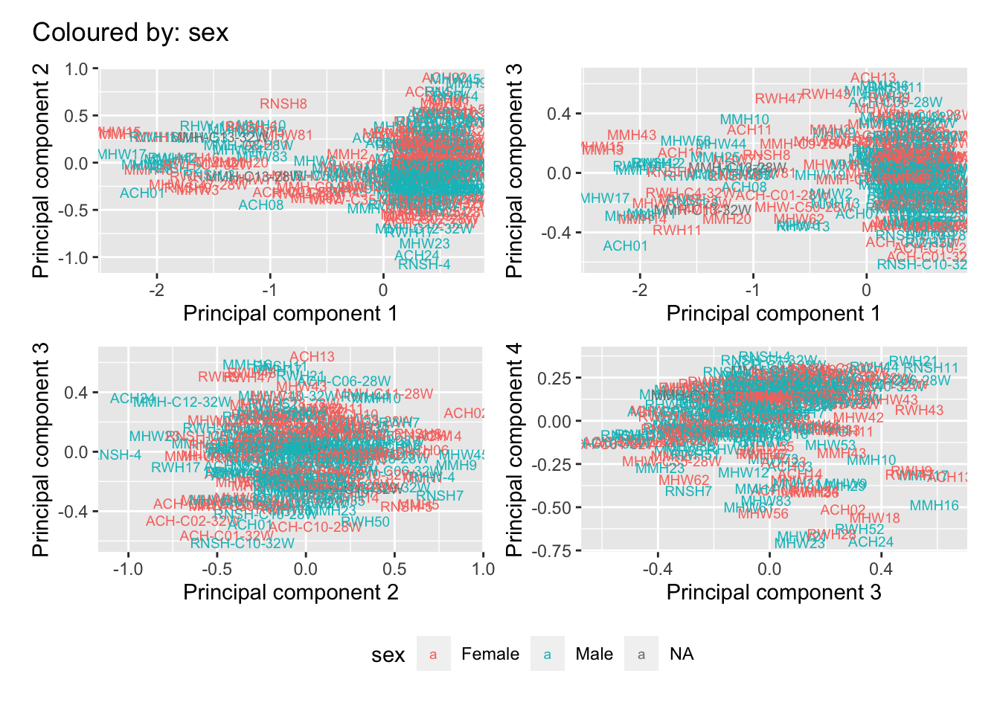
[[3]]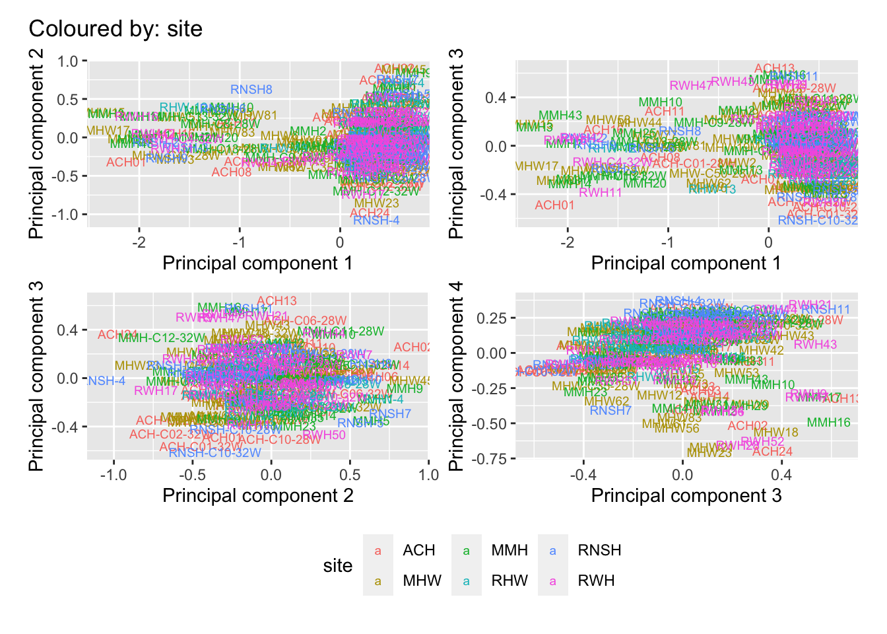
[[4]]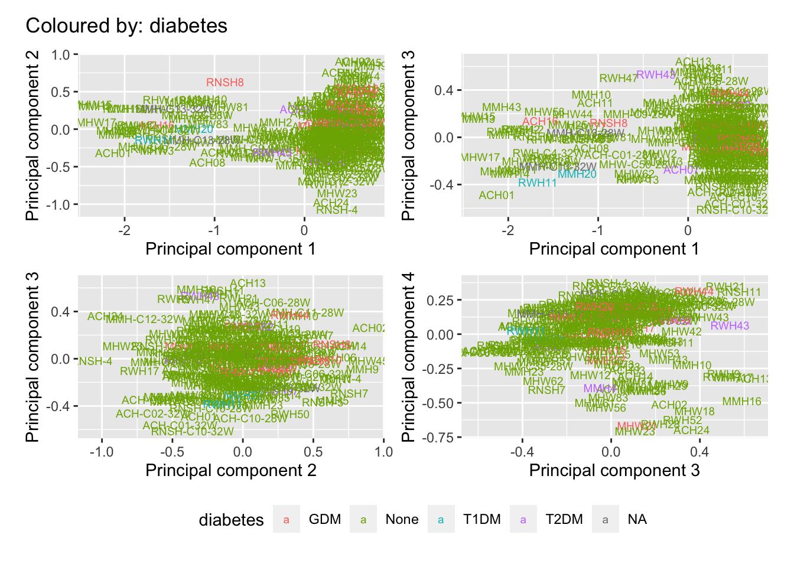
[[5]]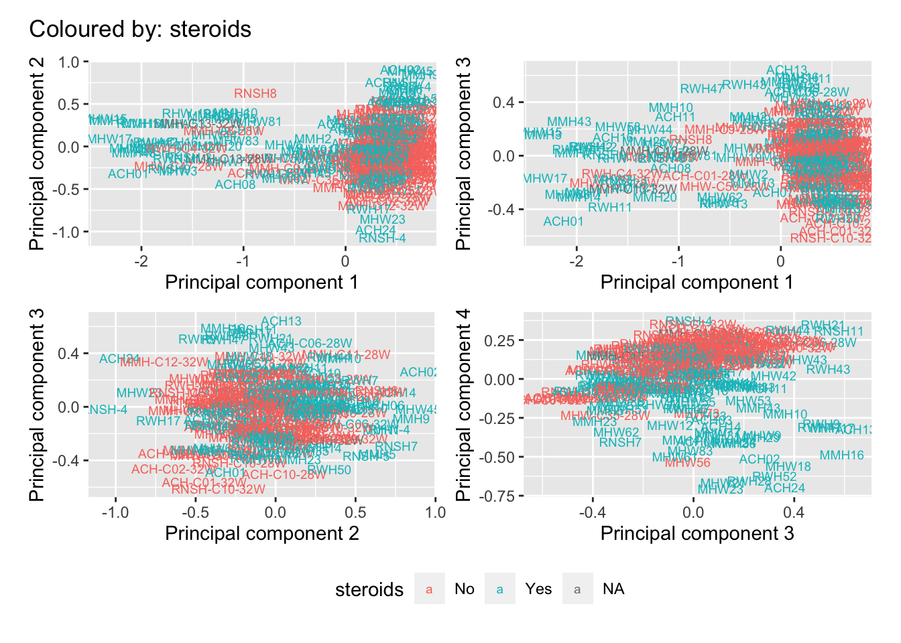
[[6]]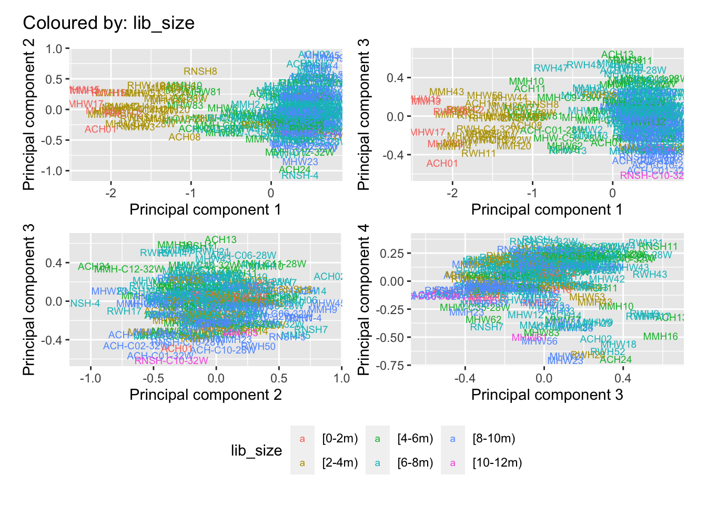
Due to the variability in the data and the strong influence of library size, the TMM normalised data was transformed using voomWithQualityWeights. This takes into account the different library sizes and the mean variance relationship in the data and calculates sample-specific quality weights. Linear models were fit in limma, incorporating the voom weights. The samples from preterm growth restricted pregnancies were compared to controls. A summary of the number of differentially expressed genes (table 2) and their details (table 3) are shown below.
#relevel the groups so that control is the reference
group <- as.factor(norm_FOX$samples$group)
group <- relevel(group, "Control")
#set up design matrix to test case status
design1 <- model.matrix(~group)
colnames(design1) <- gsub("group", "", colnames(design1))
rownames(design1) <- samplenames
vwts <- voomWithQualityWeights(norm_FOX, design1, plot=TRUE)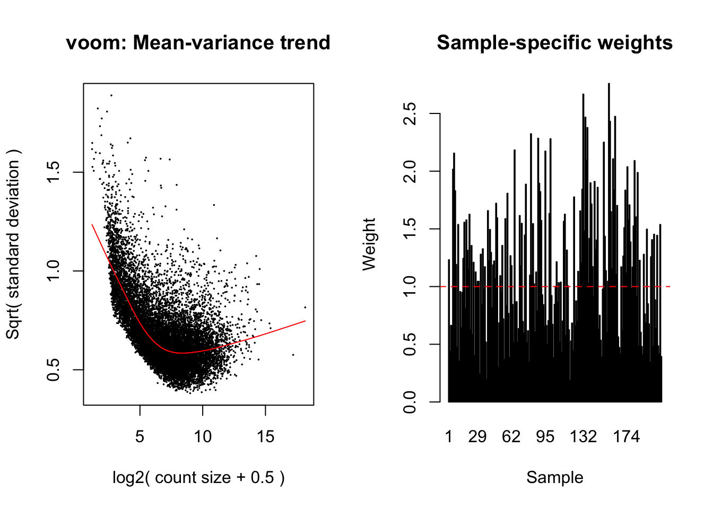
vfit <- lmFit(vwts, design1)
vfit <- contrasts.fit(vfit, coef = 2)
efit <- eBayes(vfit)
kable_styling(kable(summary(decideTests(efit)), caption="Table 2: Number of differentially expressed genes"))| Case | |
|---|---|
| Down | 2692 |
| NotSig | 8448 |
| Up | 1967 |
top_table <- topTable(efit, n=40, sort.by = "P")
write.csv(topTable(efit, n=Inf), "./output/voomQual.csv")
kable_styling(kable(top_table[,c(3,5,6,9)], caption="Table 3: Top 40 DE genes in cases compared to controls", format.args = list(scientific = -1), digits = 50))| SYMBOL | logFC | AveExpr | adj.P.Val | |
|---|---|---|---|---|
| ENSG00000157514 | TSC22D3 | 0.7982322 | 8.8528112 | 1.794210e-22 |
| ENSG00000136603 | SKIL | 0.7073969 | 7.0413201 | 1.692867e-19 |
| ENSG00000206560 | ANKRD28 | 0.7370766 | 6.6179609 | 5.247883e-19 |
| ENSG00000188596 | CFAP54 | 1.3370782 | 2.4998678 | 1.015557e-18 |
| ENSG00000169902 | TPST1 | 1.2349073 | 4.5823962 | 1.698715e-18 |
| ENSG00000227507 | LTB | -0.6091819 | 7.0385102 | 3.827614e-18 |
| ENSG00000164691 | TAGAP | 0.3768047 | 8.3831960 | 4.989859e-17 |
| ENSG00000110090 | CPT1A | 0.5230188 | 5.7326497 | 1.161077e-15 |
| ENSG00000118503 | TNFAIP3 | 0.4818610 | 5.8884026 | 1.640417e-15 |
| ENSG00000160593 | JAML | -0.4855119 | 10.2024195 | 1.644373e-15 |
| ENSG00000162191 | UBXN1 | -0.3553075 | 5.5466053 | 1.742011e-15 |
| ENSG00000149573 | MPZL2 | -0.6853475 | 3.5661237 | 2.197832e-15 |
| ENSG00000099337 | KCNK6 | -0.3425057 | 4.3287326 | 4.639178e-15 |
| ENSG00000137818 | RPLP1 | -0.8731848 | 6.7434242 | 7.755002e-15 |
| ENSG00000138670 | RASGEF1B | 0.4483372 | 4.5251865 | 8.808110e-15 |
| ENSG00000175591 | P2RY2 | -0.7826471 | 1.8765960 | 1.074433e-14 |
| ENSG00000103056 | SMPD3 | -1.0762800 | 2.0513535 | 1.750405e-14 |
| ENSG00000101160 | CTSZ | -0.4446875 | 7.1798659 | 1.947531e-14 |
| ENSG00000135486 | HNRNPA1 | -0.5585863 | 6.7990365 | 1.976056e-14 |
| ENSG00000004799 | PDK4 | 0.7758523 | 5.0210031 | 3.249060e-14 |
| ENSG00000108819 | PPP1R9B | -0.4491144 | 6.2752888 | 4.727486e-14 |
| ENSG00000213085 | CFAP45 | 0.9481530 | 2.9366665 | 8.713705e-14 |
| ENSG00000183134 | PTGDR2 | -1.1514718 | 2.0782962 | 9.772841e-14 |
| ENSG00000160087 | UBE2J2 | -0.2353195 | 5.1186270 | 1.545453e-13 |
| ENSG00000151694 | ADAM17 | 0.3984995 | 6.5675089 | 2.023379e-13 |
| ENSG00000278099 | RNVU1-2A | -1.1795871 | 6.5563456 | 2.980208e-13 |
| ENSG00000135390 | ATP5MC2 | -0.3670185 | 5.5647590 | 4.021539e-13 |
| ENSG00000096093 | EFHC1 | 0.5628333 | 3.9137591 | 5.834055e-13 |
| ENSG00000134248 | LAMTOR5 | -0.4211873 | 4.7149935 | 5.853354e-13 |
| ENSG00000239961 | LILRA4 | -0.8411866 | 0.4056092 | 5.997310e-13 |
| ENSG00000119655 | NPC2 | -0.4366324 | 5.9205634 | 7.418052e-13 |
| ENSG00000162881 | OXER1 | -0.6839051 | 2.1154811 | 7.731401e-13 |
| ENSG00000026508 | CD44 | 0.3748140 | 8.9093234 | 9.012436e-13 |
| ENSG00000178982 | EIF3K | -0.4588080 | 6.0914669 | 1.183409e-12 |
| ENSG00000163659 | TIPARP | 0.3310633 | 6.3437673 | 1.264883e-12 |
| ENSG00000160888 | IER2 | -0.4159545 | 5.7152090 | 1.426207e-12 |
| ENSG00000170906 | NDUFA3 | -0.3860299 | 3.9346154 | 1.720716e-12 |
| ENSG00000171161 | ZNF672 | -0.2737535 | 4.3874747 | 2.205336e-12 |
| ENSG00000196511 | TPK1 | 0.4212962 | 5.6063845 | 2.439580e-12 |
| ENSG00000134531 | EMP1 | 1.3480508 | 1.0828680 | 3.013891e-12 |
Since so many DE genes were identified, a logFC cut-off was applied using the treat method, which can be used to calculate p-values from empirical Bayes moderated t-statistics with a minimum log-FC requirement. The cutoff was set to 0.5, which is means that only genes that have at least a 1.4-fold change in expression in cases compared to controls will be detected. A summary of the number of differentially expressed genes (table 3) and their details (table 4) are shown below.
tfit <- treat(vfit, lfc=0.5)
kable_styling(kable(summary(decideTests(tfit)), caption="Table 3: Number of differentially expressed genes from treat method"))| Case | |
|---|---|
| Down | 8 |
| NotSig | 13087 |
| Up | 12 |
top_treat <- data.frame(topTreat(tfit, n=20, sort.by = "P"))
write.csv(top_treat, "./output/voomQual_treat.csv")
kable_styling(kable(top_treat[,c(3,5,6,9)], caption="Table 4: DE genes in cases compared to controls with treat method", format.args = list(scientific = -1), digits = 50))| SYMBOL | logFC | AveExpr | adj.P.Val | |
|---|---|---|---|---|
| ENSG00000188596 | CFAP54 | 1.3370782 | 2.4998678 | 6.074390e-07 |
| ENSG00000169902 | TPST1 | 1.2349073 | 4.5823962 | 2.850583e-06 |
| ENSG00000087116 | ADAMTS2 | 2.9768696 | 0.3365088 | 1.695745e-05 |
| ENSG00000146122 | DAAM2 | 2.0878744 | 2.6766188 | 1.695745e-05 |
| ENSG00000115414 | FN1 | 2.6409061 | 0.2545851 | 4.106956e-05 |
| ENSG00000155659 | VSIG4 | 1.7167547 | 2.0329477 | 8.643437e-05 |
| ENSG00000205927 | OLIG2 | -1.4832119 | -0.1465995 | 1.817892e-04 |
| ENSG00000134531 | EMP1 | 1.3480508 | 1.0828680 | 3.000850e-04 |
| ENSG00000250696 | LOC105377267 | -1.4923254 | 1.2439405 | 3.000850e-04 |
| ENSG00000154330 | PGM5 | 1.6118278 | 1.6611036 | 3.317035e-04 |
| ENSG00000183134 | PTGDR2 | -1.1514718 | 2.0782962 | 5.120460e-04 |
| ENSG00000278099 | RNVU1-2A | -1.1795871 | 6.5563456 | 5.120460e-04 |
| ENSG00000103056 | SMPD3 | -1.0762800 | 2.0513535 | 6.873087e-04 |
| ENSG00000161905 | ALOX15 | -1.4661430 | 1.2105093 | 6.873087e-04 |
| ENSG00000157514 | TSC22D3 | 0.7982322 | 8.8528112 | 3.228139e-03 |
| ENSG00000152463 | OLAH | 1.9090010 | 0.4888689 | 3.438304e-03 |
| ENSG00000125740 | FOSB | 1.3370149 | -0.1413510 | 9.024972e-03 |
| ENSG00000213085 | CFAP45 | 0.9481530 | 2.9366665 | 1.183157e-02 |
| ENSG00000125780 | TGM3 | -0.9818502 | 2.6266076 | 2.168699e-02 |
| ENSG00000137818 | RPLP1 | -0.8731848 | 6.7434242 | 2.605078e-02 |
The volcano plot below shows the statistical significance versus the logFC of genes in the differential expression analysis with the genes identified using the treat method represented in red.
topTreat(tfit, num = Inf) %>%
mutate(sig = ifelse(adj.P.Val <= 0.05, "<= 0.05", "> 0.05")) -> dat
ggplot(dat, aes(x = logFC, y = -log10(P.Value), color = sig)) +
geom_point(alpha = 0.75) +
ggrepel::geom_text_repel(data = subset(dat, adj.P.Val < 0.05),
aes(x = logFC, y = -log10(P.Value),
label = SYMBOL),
size = 2, colour = "black", max.overlaps = 15) +
labs(x = expression(~log[2]~"(Fold Change)"),
y = expression(~-log[10]~"(P-value)"),
colour = "FDR") +
scale_colour_brewer(palette = "Set1")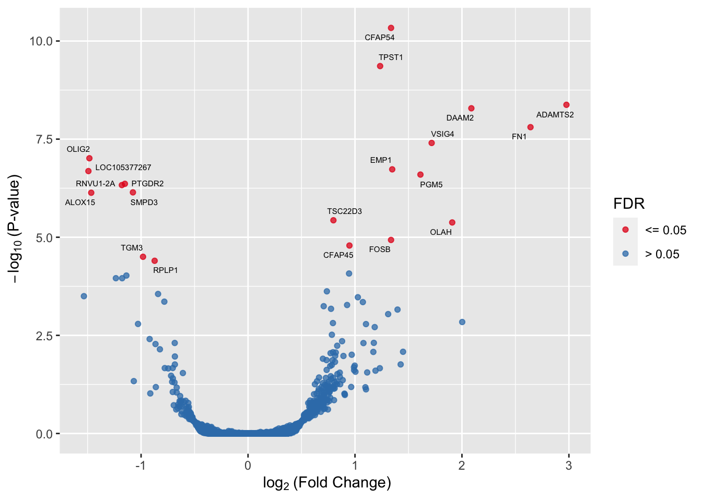
The following plots show the expression of the top 12 differentially expressed genes for samples collected from cases compared to controls. Despite the variability in the data and the lack of separation in the MDS plots, we were still able to detect differentially expressed genes, with varying degrees of overlap in expression.
dat <- reshape2::melt(cpm(norm_FOX, log = TRUE),
value.name = "cpm")
dat$group <- rep(norm_FOX$samples$group, each = nrow(norm_FOX))
dat$group <- relevel(dat$group, "Control")
dat$gene <- rep(norm_FOX$genes$SYMBOL, ncol(norm_FOX))
p <- vector("list", 12)
for(i in 1:length(p)){
p[[i]] <-ggplot(data = subset(dat, dat$gene == top_treat$SYMBOL[i]),
aes(x = group, y = cpm, colour = group)) +
geom_jitter(width = 0.25) +
stat_summary(fun = "mean", geom = "crossbar") +
labs(x = "Status", y = "log2 Norm. CPM", colour = "Status") +
ggtitle(top_treat$SYMBOL[i]) +
theme(plot.title = element_text(size = 8),
plot.subtitle = element_text(size = 7),
axis.title = element_text(size = 8),
axis.text.x = element_text(size = 7))
}
wrap_plots(p, guides = "collect", ncol = 4) &
theme(legend.position = "bottom")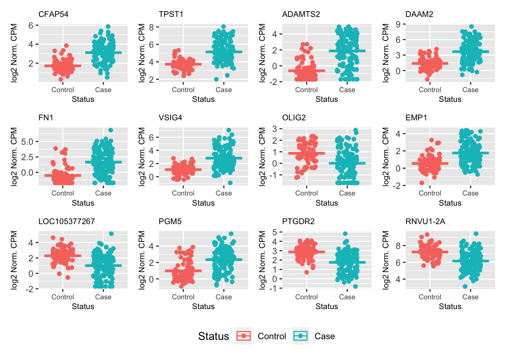
Testing for enrichment of Gene Ontology (GO) categories among statistically significant differentially expressed genes (from treat analysis) using goana didn’t yield any significant GO categories after adjusting for multiple testing.
go <- goana(top_treat$ENTREZID[top_treat$adj.P.Val < 0.05], universe = norm_FOX$genes$entrezid)
goana_treat <- topGO(go, number = Inf) %>%
mutate(FDR = p.adjust(P.DE)) %>%
dplyr::filter(FDR < 0.05)
write.csv(goana_treat, "./output/goana_treat.csv", row.names = TRUE)
kable_styling(knitr::kable(goana_treat, format.args = list(scientific = -1), digits = 50))| Term | Ont | N | DE | P.DE | FDR |
|---|---|---|---|---|---|
Since GO categories overlap, the approach outlined above may be too stringent, so we also used the over-representation test implemented in clusterProfiler among the genes identified in the treat analysis, but only two categories were identified (below).
gene <- top_treat$ENTREZID
universe <- norm_FOX$genes$ENTREZID
ego <- enrichGO(gene = gene,
universe = universe,
OrgDb = org.Hs.eg.db,
ont = "ALL",
pAdjustMethod = "BH",
qvalueCutoff = 0.05,
readable = TRUE)
dotplot(ego)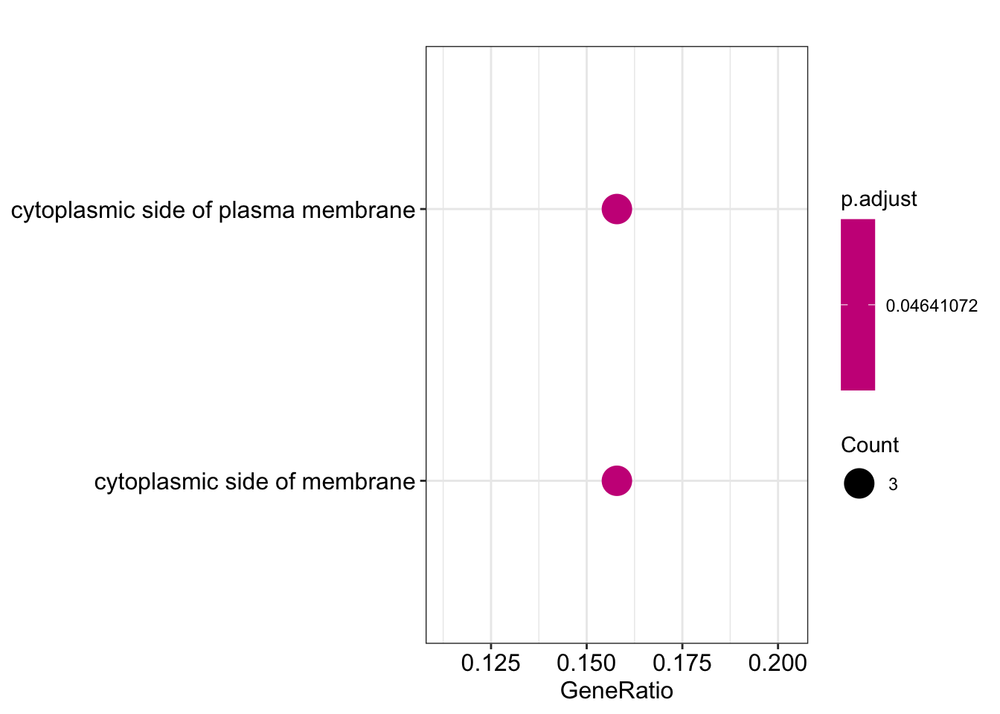
When we tested for enrichment of GO categories among all statistically significant genes (regardless of logFC) using goana, many more categories were identified (tbale 5), but they were not very specific.
top_table <- data.frame(topTable(efit, number = Inf, sort.by = "P"))
go <- goana(top_table$ENTREZID[top_table$adj.P.Val < 0.05], universe = norm_FOX$genes$entrezid)
go_all <- topGO(go, number = Inf) %>%
mutate(FDR = p.adjust(P.DE)) %>%
dplyr::filter(FDR < 0.05)
write.csv(go_all, "./output/goana_all.csv", row.names = TRUE)
kable_styling(knitr::kable(go_all[1:40,], format.args = list(scientific = -1), digits = 50, caption="Table 5: Top 40 GO categories from goana gene set enrichment analysis using all genes with FDR < 0.05"))| Term | Ont | N | DE | P.DE | FDR | |
|---|---|---|---|---|---|---|
| GO:0005737 | cytoplasm | CC | 11625 | 3081 | 0.000000e+00 | 0.000000e+00 |
| GO:0005622 | intracellular | CC | 15073 | 3706 | 0.000000e+00 | 0.000000e+00 |
| GO:0044424 | intracellular part | CC | 15063 | 3703 | 0.000000e+00 | 0.000000e+00 |
| GO:0044444 | cytoplasmic part | CC | 9735 | 2661 | 0.000000e+00 | 0.000000e+00 |
| GO:0005515 | protein binding | MF | 11807 | 3042 | 0.000000e+00 | 0.000000e+00 |
| GO:0044446 | intracellular organelle part | CC | 9811 | 2627 | 0.000000e+00 | 0.000000e+00 |
| GO:0044422 | organelle part | CC | 10112 | 2687 | 0.000000e+00 | 0.000000e+00 |
| GO:0043226 | organelle | CC | 14144 | 3456 | 0.000000e+00 | 0.000000e+00 |
| GO:0043229 | intracellular organelle | CC | 13294 | 3294 | 0.000000e+00 | 0.000000e+00 |
| GO:0043227 | membrane-bounded organelle | CC | 13019 | 3222 | 0.000000e+00 | 0.000000e+00 |
| GO:0043231 | intracellular membrane-bounded organelle | CC | 11488 | 2904 | 0.000000e+00 | 0.000000e+00 |
| GO:0005488 | binding | MF | 15267 | 3622 | 0.000000e+00 | 0.000000e+00 |
| GO:0003674 | molecular_function | MF | 17697 | 4029 | 0.000000e+00 | 0.000000e+00 |
| GO:0005829 | cytosol | CC | 5085 | 1479 | 0.000000e+00 | 0.000000e+00 |
| GO:0044464 | cell part | CC | 17521 | 3990 | 0.000000e+00 | 2.800000e-49 |
| GO:0005623 | cell | CC | 17590 | 3999 | 0.000000e+00 | 2.000000e-48 |
| GO:0005654 | nucleoplasm | CC | 3512 | 1054 | 2.007779e-43 | 4.596810e-39 |
| GO:0070013 | intracellular organelle lumen | CC | 5740 | 1558 | 4.225385e-39 | 9.673597e-35 |
| GO:0031974 | membrane-enclosed lumen | CC | 5740 | 1558 | 4.225385e-39 | 9.673597e-35 |
| GO:0043233 | organelle lumen | CC | 5740 | 1558 | 4.225385e-39 | 9.673597e-35 |
| GO:0071840 | cellular component organization or biogenesis | BP | 6697 | 1762 | 8.214550e-37 | 1.880393e-32 |
| GO:0006996 | organelle organization | BP | 3885 | 1102 | 1.389829e-33 | 3.181319e-29 |
| GO:0044237 | cellular metabolic process | BP | 11301 | 2728 | 2.297847e-33 | 5.259542e-29 |
| GO:0016043 | cellular component organization | BP | 6512 | 1702 | 3.363145e-33 | 7.697566e-29 |
| GO:0012505 | endomembrane system | CC | 4441 | 1218 | 1.310103e-30 | 2.998432e-26 |
| GO:0031090 | organelle membrane | CC | 2903 | 852 | 2.505979e-30 | 5.735183e-26 |
| GO:0070727 | cellular macromolecule localization | BP | 1883 | 595 | 1.834951e-29 | 4.199285e-25 |
| GO:1901564 | organonitrogen compound metabolic process | BP | 7040 | 1798 | 2.001301e-29 | 4.579776e-25 |
| GO:0034613 | cellular protein localization | BP | 1872 | 592 | 2.067681e-29 | 4.731474e-25 |
| GO:0003824 | catalytic activity | MF | 5710 | 1498 | 9.809033e-29 | 2.244503e-24 |
| GO:0044428 | nuclear part | CC | 5023 | 1342 | 1.074645e-28 | 2.458895e-24 |
| GO:0051641 | cellular localization | BP | 2927 | 850 | 1.467337e-28 | 3.357267e-24 |
| GO:0044260 | cellular macromolecule metabolic process | BP | 8352 | 2078 | 1.877070e-28 | 4.294549e-24 |
| GO:0008104 | protein localization | BP | 2765 | 810 | 2.110326e-28 | 4.828003e-24 |
| GO:0036230 | granulocyte activation | BP | 504 | 212 | 3.949399e-27 | 9.035041e-23 |
| GO:0002283 | neutrophil activation involved in immune response | BP | 488 | 207 | 4.374210e-27 | 1.000644e-22 |
| GO:0044238 | primary metabolic process | BP | 11287 | 2686 | 1.276751e-26 | 2.920568e-22 |
| GO:0042119 | neutrophil activation | BP | 498 | 209 | 1.323017e-26 | 3.026268e-22 |
| GO:0043312 | neutrophil degranulation | BP | 485 | 205 | 1.355950e-26 | 3.101465e-22 |
| GO:0002446 | neutrophil mediated immunity | BP | 499 | 209 | 1.812046e-26 | 4.144513e-22 |
Using clusterProfiler with this larger set of genes as input yielded 10 significant GO categories related to neutrophils (below).
gene <- top_table$ENTREZID[top_table$adj.P.Val < 0.05]
universe <- norm_FOX$genes$ENTREZID
ego <- enrichGO(gene = gene,
universe = universe,
OrgDb = org.Hs.eg.db,
ont = "ALL",
pAdjustMethod = "BH",
qvalueCutoff = 0.05,
readable = TRUE)
dotplot(ego)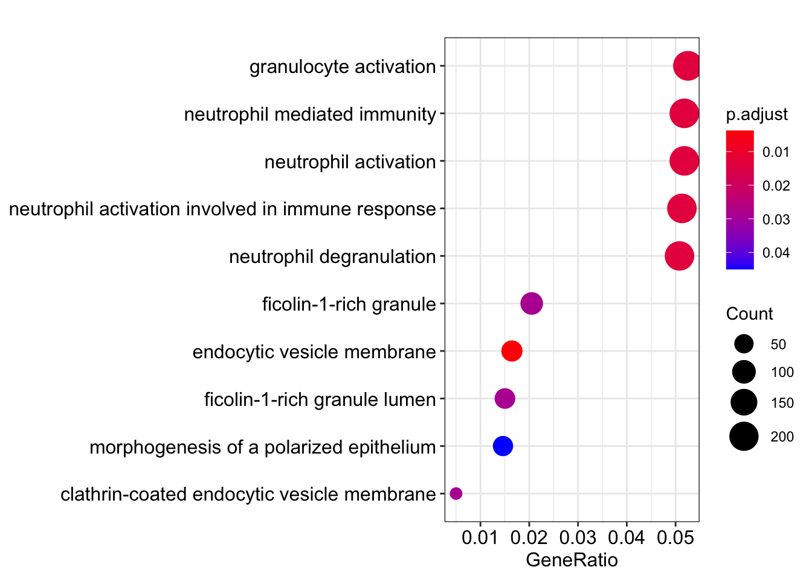
The camera function performs a competitive test to find if genes in a given set are highly ranked in terms of differential expression compared to genes that are not in that set. In the output below we tested gene sets from the Molecular Signatures Database (MSigDB).
MSigDB genesets from version 7.1 in R format were downloaded here for this analysis. We looked at GO gene sets, Hallmark gene sets and curated gene sets.
The GO gene sets consist of genes annotated by the same GO terms.
GO <- readRDS("./data/MSigDB/Hs.c5.all.v7.1.entrez.rds", refhook = NULL)
idx <- ids2indices(GO, id=norm_FOX$genes$ENTREZID, remove.empty=TRUE)
cam_GO <- camera(vwts,idx,design1)
write.csv(cam_GO[cam_GO$FDR < 0.05,], "./output/camera_GO.csv", row.names = TRUE)
kable_styling(kable(cam_GO[cam_GO$FDR < 0.05,][1:30,], format.args = list(scientific = -1), digits = 50, caption="Table 6: Camera gene set test results for MSigDB GO gene sets"))| NGenes | Direction | PValue | FDR | |
|---|---|---|---|---|
| GO_ALTERNATIVE_MRNA_SPLICING_VIA_SPLICEOSOME | 64 | Down | 3.602768e-08 | 2.203883e-04 |
| GO_FICOLIN_1_RICH_GRANULE | 120 | Down | 4.358515e-08 | 2.203883e-04 |
| GO_REGULATION_OF_MRNA_SPLICING_VIA_SPLICEOSOME | 85 | Down | 8.996509e-08 | 3.032723e-04 |
| GO_RNA_SPLICING_VIA_TRANSESTERIFICATION_REACTIONS | 311 | Down | 2.062286e-07 | 5.213974e-04 |
| GO_REGULATION_OF_MRNA_PROCESSING | 122 | Down | 4.284093e-07 | 8.665007e-04 |
| GO_RNA_SPLICING | 391 | Down | 9.076751e-07 | 1.327985e-03 |
| GO_SPLICEOSOMAL_COMPLEX | 179 | Down | 9.192028e-07 | 1.327985e-03 |
| GO_REGULATION_OF_MRNA_METABOLIC_PROCESS | 281 | Down | 1.704189e-06 | 2.154308e-03 |
| GO_MRNA_PROCESSING | 451 | Down | 3.393856e-06 | 3.535399e-03 |
| GO_FORMATION_OF_CYTOPLASMIC_TRANSLATION_INITIATION_COMPLEX | 14 | Down | 3.831214e-06 | 3.535399e-03 |
| GO_NEGATIVE_REGULATION_OF_MRNA_SPLICING_VIA_SPLICEOSOME | 20 | Down | 4.180426e-06 | 3.535399e-03 |
| GO_EUKARYOTIC_48S_PREINITIATION_COMPLEX | 13 | Down | 4.195074e-06 | 3.535399e-03 |
| GO_EUKARYOTIC_TRANSLATION_INITIATION_FACTOR_3_COMPLEX | 14 | Down | 5.714089e-06 | 4.392432e-03 |
| GO_TRANSLATION_PREINITIATION_COMPLEX | 16 | Down | 6.450096e-06 | 4.392432e-03 |
| GO_REGULATION_OF_CELLULAR_AMINO_ACID_METABOLIC_PROCESS | 52 | Down | 6.515028e-06 | 4.392432e-03 |
| GO_REGULATION_OF_RNA_SPLICING | 116 | Down | 9.436829e-06 | 5.630828e-03 |
| GO_RIBONUCLEOPROTEIN_COMPLEX | 630 | Down | 9.843442e-06 | 5.630828e-03 |
| GO_CYTOPLASMIC_TRANSLATIONAL_INITIATION | 28 | Down | 1.002224e-05 | 5.630828e-03 |
| GO_NEGATIVE_REGULATION_OF_MRNA_PROCESSING | 29 | Down | 1.234286e-05 | 6.476145e-03 |
| GO_TRANSLATIONAL_INITIATION | 179 | Down | 1.280756e-05 | 6.476145e-03 |
| GO_RIBOSOME | 212 | Down | 1.445756e-05 | 6.962347e-03 |
| GO_EXTRACELLULAR_MATRIX_STRUCTURAL_CONSTITUENT | 59 | Up | 1.707274e-05 | 7.848026e-03 |
| GO_PROTEASOME_ACCESSORY_COMPLEX | 24 | Down | 2.188853e-05 | 9.144104e-03 |
| GO_TRANSLATION_INITIATION_FACTOR_ACTIVITY | 46 | Down | 2.232266e-05 | 9.144104e-03 |
| GO_MRNA_METABOLIC_PROCESS | 753 | Down | 2.260482e-05 | 9.144104e-03 |
| GO_CILIARY_PLASM | 62 | Up | 2.580426e-05 | 1.003686e-02 |
| GO_INTRACILIARY_TRANSPORT_PARTICLE | 26 | Up | 2.854866e-05 | 1.033235e-02 |
| GO_ANTIGEN_PROCESSING_AND_PRESENTATION_OF_EXOGENOUS_PEPTIDE_ANTIGEN_VIA_MHC_CLASS_I | 72 | Down | 2.860732e-05 | 1.033235e-02 |
| GO_MITOCHONDRIAL_PROTEIN_COMPLEX | 243 | Down | 3.242939e-05 | 1.087862e-02 |
| GO_TRANSLATION_FACTOR_ACTIVITY_RNA_BINDING | 75 | Down | 3.292013e-05 | 1.087862e-02 |
The Hallmark gene sets are coherently expressed signatures derived by aggregating many MSigDB gene sets to represent well-defined biological states or processes.
hallmark <- readRDS("./data/MSigDB/Hs.h.all.v7.1.entrez.rds", refhook = NULL)
idx <- ids2indices(hallmark, id=norm_FOX$genes$ENTREZID, remove.empty=TRUE)
cam_h <- camera(vwts,idx,design1)
write.csv(cam_h[cam_h$FDR < 0.05,], "./output/camera_hallmark.csv", row.names = TRUE)
kable_styling(kable(cam_h[cam_h$FDR < 0.05,], format.args = list(scientific = -1), digits = 50, caption="Table 7: Camera gene set test results for MSigDB Hallmark gene sets"))| NGenes | Direction | PValue | FDR | |
|---|---|---|---|---|
| HALLMARK_MYC_TARGETS_V1 | 197 | Down | 1.273615e-06 | 6.368073e-05 |
| HALLMARK_OXIDATIVE_PHOSPHORYLATION | 195 | Down | 5.353639e-06 | 1.338410e-04 |
| HALLMARK_REACTIVE_OXYGEN_SPECIES_PATHWAY | 47 | Down | 1.565794e-04 | 2.609657e-03 |
| HALLMARK_UV_RESPONSE_DN | 113 | Up | 3.518120e-04 | 3.746947e-03 |
| HALLMARK_KRAS_SIGNALING_DN | 77 | Up | 3.746947e-04 | 3.746947e-03 |
| HALLMARK_ADIPOGENESIS | 170 | Down | 5.484190e-03 | 4.570158e-02 |
The barcode plots below show the enrichment of genes among the up and down regulated genes in the top four hallmark gene sets identified by the camera analysis. The black bars represent the logFC of each of the genes, with down regulated genes at the left and up regulated genes at the right of each plot. The enrichment worm at the top of the plot shows the relative enrichment of the genes in each part of the plot.
par(mfrow=c(2,2))
sapply(1:4, function(i){
barcodeplot(efit$t[,1], index=idx[[rownames(cam_h)[i]]],
main = rownames(cam_h)[i], cex.main = 0.75)
})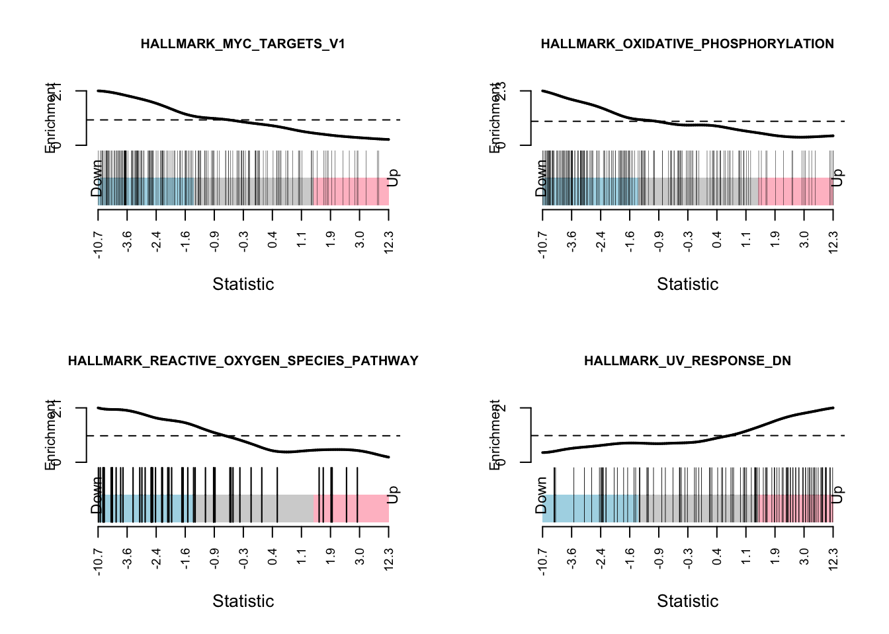
[[1]]
NULL
[[2]]
NULL
[[3]]
NULL
[[4]]
NULLThe curated gene sets are compiled from online pathway databases, publications in PubMed, and knowledge of domain experts.
c2 <- readRDS("./data/MSigDB/Hs.c2.all.v7.1.entrez.rds", refhook = NULL)
idx <- ids2indices(c2, id=norm_FOX$genes$ENTREZID, remove.empty=TRUE)
cam_c2 <- camera(vwts,idx,design1)
write.csv(cam_c2[cam_c2$FDR < 0.05,], "./output/camera_c2.csv", row.names = TRUE)
kable_styling(kable(cam_c2[cam_c2$FDR < 0.05,][1:30,], format.args = list(scientific = -1), digits = 50, caption="Table 8: Top 30 Camera gene set test results for MSigDB curated gene sets"))| NGenes | Direction | PValue | FDR | |
|---|---|---|---|---|
| FLORIO_NEOCORTEX_BASAL_RADIAL_GLIA_DN | 151 | Up | 8.649180e-11 | 4.750995e-07 |
| KEGG_SPLICEOSOME | 125 | Down | 1.042893e-08 | 2.864306e-05 |
| REACTOME_MRNA_SPLICING | 185 | Down | 5.023377e-08 | 9.197803e-05 |
| LEE_EARLY_T_LYMPHOCYTE_UP | 89 | Up | 8.988754e-08 | 1.216660e-04 |
| CHNG_MULTIPLE_MYELOMA_HYPERPLOID_UP | 50 | Down | 1.107464e-07 | 1.216660e-04 |
| KEGG_ECM_RECEPTOR_INTERACTION | 50 | Up | 1.936000e-07 | 1.561053e-04 |
| ZHAN_MULTIPLE_MYELOMA_PR_UP | 37 | Up | 1.989327e-07 | 1.561053e-04 |
| REACTOME_TRANSLATION | 283 | Down | 3.371653e-07 | 2.315061e-04 |
| YAO_TEMPORAL_RESPONSE_TO_PROGESTERONE_CLUSTER_17 | 176 | Down | 5.253611e-07 | 3.000099e-04 |
| KANG_DOXORUBICIN_RESISTANCE_UP | 48 | Up | 5.835224e-07 | 3.000099e-04 |
| HSIAO_HOUSEKEEPING_GENES | 382 | Down | 6.007843e-07 | 3.000099e-04 |
| REACTOME_ECM_PROTEOGLYCANS | 36 | Up | 1.194170e-06 | 5.047693e-04 |
| REACTOME_AUF1_HNRNP_D0_BINDS_AND_DESTABILIZES_MRNA | 53 | Down | 1.194612e-06 | 5.047693e-04 |
| HOLLEMAN_PREDNISOLONE_RESISTANCE_B_ALL_UP | 22 | Down | 1.433215e-06 | 5.623323e-04 |
| REACTOME_PROCESSING_OF_CAPPED_INTRON_CONTAINING_PRE_MRNA | 236 | Down | 2.388443e-06 | 8.746479e-04 |
| DUTERTRE_ESTRADIOL_RESPONSE_24HR_UP | 270 | Up | 3.106083e-06 | 1.066357e-03 |
| VECCHI_GASTRIC_CANCER_ADVANCED_VS_EARLY_UP | 98 | Up | 3.459077e-06 | 1.117689e-03 |
| REACTOME_NEGATIVE_REGULATION_OF_NOTCH4_SIGNALING | 54 | Down | 3.993479e-06 | 1.218677e-03 |
| REACTOME_EUKARYOTIC_TRANSLATION_INITIATION | 114 | Down | 4.451415e-06 | 1.226245e-03 |
| MULLIGHAN_MLL_SIGNATURE_1_UP | 358 | Down | 4.464756e-06 | 1.226245e-03 |
| REACTOME_DECTIN_1_MEDIATED_NONCANONICAL_NF_KB_SIGNALING | 58 | Down | 5.726841e-06 | 1.497978e-03 |
| NAKAYAMA_SOFT_TISSUE_TUMORS_PCA2_UP | 52 | Up | 6.858841e-06 | 1.712528e-03 |
| KEGG_PARKINSONS_DISEASE | 110 | Down | 7.290392e-06 | 1.733851e-03 |
| KEGG_PROTEASOME | 42 | Down | 7.766479e-06 | 1.733851e-03 |
| REACTOME_MET_ACTIVATES_PTK2_SIGNALING | 15 | Up | 7.891185e-06 | 1.733851e-03 |
| REACTOME_METABOLISM_OF_POLYAMINES | 56 | Down | 9.421078e-06 | 1.940401e-03 |
| HONRADO_BREAST_CANCER_BRCA1_VS_BRCA2 | 13 | Up | 9.537745e-06 | 1.940401e-03 |
| CREIGHTON_ENDOCRINE_THERAPY_RESISTANCE_2 | 303 | Up | 9.951349e-06 | 1.952241e-03 |
| YAO_TEMPORAL_RESPONSE_TO_PROGESTERONE_CLUSTER_10 | 65 | Down | 1.161878e-05 | 2.152445e-03 |
| REACTOME_DEGRADATION_OF_GLI1_BY_THE_PROTEASOME | 56 | Down | 1.175557e-05 | 2.152445e-03 |
The barcode plots below show the top 4 curated genesets.
par(mfrow=c(2,2))
sapply(1:4, function(i){
barcodeplot(efit$t[,1], index=idx[[rownames(cam_c2)[i]]],
main = rownames(cam_c2)[i], cex.main = 0.75)
})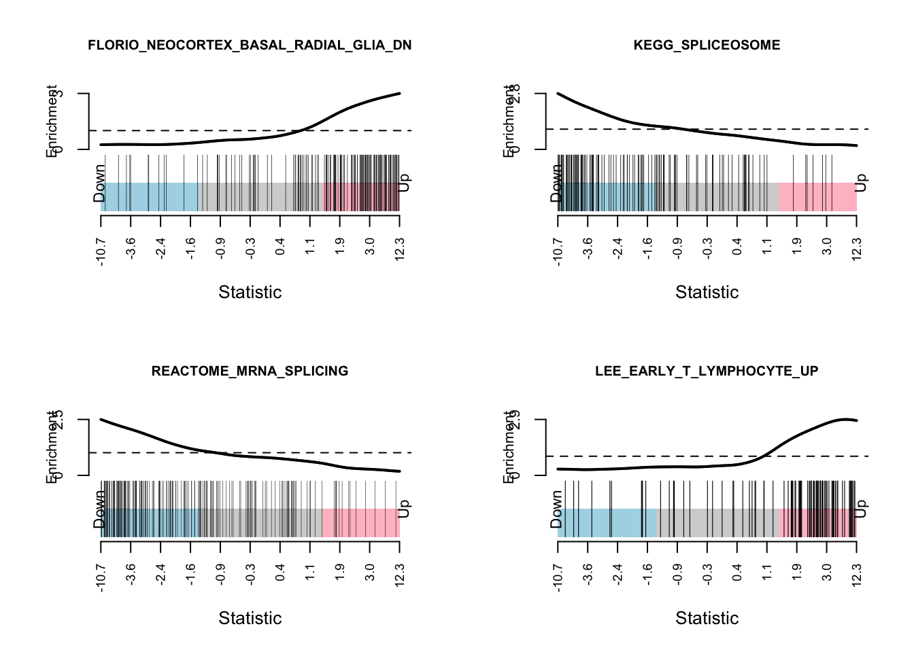
[[1]]
NULL
[[2]]
NULL
[[3]]
NULL
[[4]]
NULLThe sequences utilised in this study have previously been investigated using a similar analysis, which identified some overlapping significantly expressed genes. Some of the differences in the results can be attributed to the use of different methods for aligning and counting reads, and whether Ensembl or Entrez IDs were used. This new analysis, identified 9 genes that were not originally identified (FN1, VSIG4, OLIG2, LOC105377267, RNVU1-2A, SMPD3, FOSB, TGM3 and RPLP1), as well as an additional two that were previously identified, but never validated (CFAP54 and CFAP45). Additionally, this study used gene set enrichment analysis and competitive gene set testing to uncover pathways and gene sets that were perturbed in the blood of women with preterm growth restricted fetuses.
sessionInfo()R version 3.6.1 (2019-07-05)
Platform: x86_64-apple-darwin15.6.0 (64-bit)
Running under: macOS 10.16
Matrix products: default
BLAS: /Library/Frameworks/R.framework/Versions/3.6/Resources/lib/libRblas.0.dylib
LAPACK: /Library/Frameworks/R.framework/Versions/3.6/Resources/lib/libRlapack.dylib
locale:
[1] en_AU.UTF-8/en_AU.UTF-8/en_AU.UTF-8/C/en_AU.UTF-8/en_AU.UTF-8
attached base packages:
[1] stats4 parallel stats graphics grDevices utils datasets
[8] methods base
other attached packages:
[1] clusterProfiler_3.14.3
[2] ggrepel_0.9.1
[3] here_1.0.1
[4] NMF_0.24.0
[5] cluster_2.1.2
[6] rngtools_1.5.2
[7] pkgmaker_0.32.2
[8] registry_0.5-1
[9] patchwork_1.1.2
[10] Homo.sapiens_1.3.1
[11] TxDb.Hsapiens.UCSC.hg19.knownGene_3.2.2
[12] org.Hs.eg.db_3.10.0
[13] GO.db_3.10.0
[14] OrganismDbi_1.28.0
[15] GenomicFeatures_1.38.2
[16] AnnotationDbi_1.48.0
[17] kableExtra_1.3.4
[18] knitr_1.40
[19] tableone_0.13.2
[20] RColorBrewer_1.1-3
[21] EDASeq_2.20.0
[22] ShortRead_1.44.3
[23] GenomicAlignments_1.22.1
[24] SummarizedExperiment_1.16.1
[25] DelayedArray_0.12.3
[26] matrixStats_0.62.0
[27] Rsamtools_2.2.3
[28] GenomicRanges_1.38.0
[29] GenomeInfoDb_1.22.1
[30] Biostrings_2.54.0
[31] XVector_0.26.0
[32] IRanges_2.20.2
[33] S4Vectors_0.24.4
[34] BiocParallel_1.20.1
[35] Biobase_2.46.0
[36] BiocGenerics_0.32.0
[37] forcats_0.5.2
[38] stringr_1.4.1
[39] dplyr_1.0.10
[40] purrr_0.3.4
[41] readr_2.1.2
[42] tidyr_1.2.1
[43] tibble_3.1.8
[44] ggplot2_3.3.6
[45] tidyverse_1.3.2
[46] edgeR_3.28.1
[47] Glimma_1.14.0
[48] limma_3.42.2
[49] workflowr_1.7.0
loaded via a namespace (and not attached):
[1] rappdirs_0.3.3 rtracklayer_1.46.0 R.methodsS3_1.8.2
[4] bit64_4.0.5 aroma.light_3.16.0 R.utils_2.12.0
[7] data.table_1.14.2 hwriter_1.3.2.1 RCurl_1.98-1.8
[10] doParallel_1.0.17 generics_0.1.3 callr_3.7.2
[13] cowplot_1.1.1 RSQLite_2.2.17 europepmc_0.4.1
[16] proxy_0.4-27 bit_4.0.4 tzdb_0.3.0
[19] enrichplot_1.6.1 webshot_0.5.4 xml2_1.3.3
[22] lubridate_1.8.0 httpuv_1.6.6 assertthat_0.2.1
[25] viridis_0.6.2 gargle_1.2.1 xfun_0.33
[28] hms_1.1.2 jquerylib_0.1.4 evaluate_0.16
[31] promises_1.2.0.1 fansi_1.0.3 progress_1.2.2
[34] dbplyr_2.2.1 readxl_1.4.1 igraph_1.2.11
[37] DBI_1.1.3 geneplotter_1.64.0 googledrive_2.0.0
[40] ellipsis_0.3.2 backports_1.4.1 survey_4.1-1
[43] annotate_1.64.0 gridBase_0.4-7 biomaRt_2.42.1
[46] deldir_1.0-6 vctrs_0.4.1 cachem_1.0.6
[49] withr_2.5.0 ggforce_0.3.4 triebeard_0.3.0
[52] prettyunits_1.1.1 svglite_2.1.0 DOSE_3.12.0
[55] crayon_1.5.1 genefilter_1.68.0 labeling_0.4.2
[58] pkgconfig_2.0.3 tweenr_2.0.2 rlang_1.0.6
[61] lifecycle_1.0.2 BiocFileCache_1.10.2 modelr_0.1.9
[64] cellranger_1.1.0 rprojroot_2.0.3 polyclip_1.10-0
[67] graph_1.64.0 Matrix_1.3-4 urltools_1.7.3
[70] zoo_1.8-11 reprex_2.0.2 ggridges_0.5.4
[73] whisker_0.4 processx_3.7.0 googlesheets4_1.0.1
[76] png_0.1-7 viridisLite_0.4.1 bitops_1.0-7
[79] getPass_0.2-2 R.oo_1.25.0 blob_1.2.3
[82] qvalue_2.18.0 gridGraphics_0.5-1 jpeg_0.1-9
[85] scales_1.2.1 memoise_2.0.1 magrittr_2.0.3
[88] plyr_1.8.7 zlibbioc_1.32.0 compiler_3.6.1
[91] cli_3.4.1 ps_1.7.1 MASS_7.3-58.1
[94] tidyselect_1.1.2 stringi_1.7.8 highr_0.9
[97] mitools_2.4 yaml_2.3.5 GOSemSim_2.12.1
[100] askpass_1.1 locfit_1.5-9.4 latticeExtra_0.6-30
[103] grid_3.6.1 sass_0.4.2 fastmatch_1.1-3
[106] tools_3.6.1 rstudioapi_0.14 foreach_1.5.2
[109] git2r_0.30.1 gridExtra_2.3 farver_2.1.1
[112] ggraph_2.0.6 rvcheck_0.2.1 digest_0.6.29
[115] BiocManager_1.30.18 Rcpp_1.0.9 broom_1.0.1
[118] later_1.3.0 httr_1.4.4 colorspace_2.0-3
[121] rvest_1.0.3 XML_3.99-0.3 fs_1.5.2
[124] splines_3.6.1 yulab.utils_0.0.5 RBGL_1.62.1
[127] graphlayouts_0.8.1 ggplotify_0.1.0 systemfonts_1.0.4
[130] xtable_1.8-4 jsonlite_1.8.0 tidygraph_1.2.2
[133] R6_2.5.1 pillar_1.8.1 htmltools_0.5.3
[136] glue_1.6.2 fastmap_1.1.0 DESeq_1.38.0
[139] class_7.3-20 codetools_0.2-18 fgsea_1.12.0
[142] utf8_1.2.2 lattice_0.20-45 bslib_0.4.0
[145] curl_4.3.2 openssl_2.0.3 interp_1.0-33
[148] survival_3.4-0 rmarkdown_2.16 munsell_0.5.0
[151] e1071_1.7-11 DO.db_2.9 GenomeInfoDbData_1.2.2
[154] iterators_1.0.14 labelled_2.10.0 haven_2.5.1
[157] reshape2_1.4.4 gtable_0.3.1
sessionInfo()R version 3.6.1 (2019-07-05)
Platform: x86_64-apple-darwin15.6.0 (64-bit)
Running under: macOS 10.16
Matrix products: default
BLAS: /Library/Frameworks/R.framework/Versions/3.6/Resources/lib/libRblas.0.dylib
LAPACK: /Library/Frameworks/R.framework/Versions/3.6/Resources/lib/libRlapack.dylib
locale:
[1] en_AU.UTF-8/en_AU.UTF-8/en_AU.UTF-8/C/en_AU.UTF-8/en_AU.UTF-8
attached base packages:
[1] stats4 parallel stats graphics grDevices utils datasets
[8] methods base
other attached packages:
[1] clusterProfiler_3.14.3
[2] ggrepel_0.9.1
[3] here_1.0.1
[4] NMF_0.24.0
[5] cluster_2.1.2
[6] rngtools_1.5.2
[7] pkgmaker_0.32.2
[8] registry_0.5-1
[9] patchwork_1.1.2
[10] Homo.sapiens_1.3.1
[11] TxDb.Hsapiens.UCSC.hg19.knownGene_3.2.2
[12] org.Hs.eg.db_3.10.0
[13] GO.db_3.10.0
[14] OrganismDbi_1.28.0
[15] GenomicFeatures_1.38.2
[16] AnnotationDbi_1.48.0
[17] kableExtra_1.3.4
[18] knitr_1.40
[19] tableone_0.13.2
[20] RColorBrewer_1.1-3
[21] EDASeq_2.20.0
[22] ShortRead_1.44.3
[23] GenomicAlignments_1.22.1
[24] SummarizedExperiment_1.16.1
[25] DelayedArray_0.12.3
[26] matrixStats_0.62.0
[27] Rsamtools_2.2.3
[28] GenomicRanges_1.38.0
[29] GenomeInfoDb_1.22.1
[30] Biostrings_2.54.0
[31] XVector_0.26.0
[32] IRanges_2.20.2
[33] S4Vectors_0.24.4
[34] BiocParallel_1.20.1
[35] Biobase_2.46.0
[36] BiocGenerics_0.32.0
[37] forcats_0.5.2
[38] stringr_1.4.1
[39] dplyr_1.0.10
[40] purrr_0.3.4
[41] readr_2.1.2
[42] tidyr_1.2.1
[43] tibble_3.1.8
[44] ggplot2_3.3.6
[45] tidyverse_1.3.2
[46] edgeR_3.28.1
[47] Glimma_1.14.0
[48] limma_3.42.2
[49] workflowr_1.7.0
loaded via a namespace (and not attached):
[1] rappdirs_0.3.3 rtracklayer_1.46.0 R.methodsS3_1.8.2
[4] bit64_4.0.5 aroma.light_3.16.0 R.utils_2.12.0
[7] data.table_1.14.2 hwriter_1.3.2.1 RCurl_1.98-1.8
[10] doParallel_1.0.17 generics_0.1.3 callr_3.7.2
[13] cowplot_1.1.1 RSQLite_2.2.17 europepmc_0.4.1
[16] proxy_0.4-27 bit_4.0.4 tzdb_0.3.0
[19] enrichplot_1.6.1 webshot_0.5.4 xml2_1.3.3
[22] lubridate_1.8.0 httpuv_1.6.6 assertthat_0.2.1
[25] viridis_0.6.2 gargle_1.2.1 xfun_0.33
[28] hms_1.1.2 jquerylib_0.1.4 evaluate_0.16
[31] promises_1.2.0.1 fansi_1.0.3 progress_1.2.2
[34] dbplyr_2.2.1 readxl_1.4.1 igraph_1.2.11
[37] DBI_1.1.3 geneplotter_1.64.0 googledrive_2.0.0
[40] ellipsis_0.3.2 backports_1.4.1 survey_4.1-1
[43] annotate_1.64.0 gridBase_0.4-7 biomaRt_2.42.1
[46] deldir_1.0-6 vctrs_0.4.1 cachem_1.0.6
[49] withr_2.5.0 ggforce_0.3.4 triebeard_0.3.0
[52] prettyunits_1.1.1 svglite_2.1.0 DOSE_3.12.0
[55] crayon_1.5.1 genefilter_1.68.0 labeling_0.4.2
[58] pkgconfig_2.0.3 tweenr_2.0.2 rlang_1.0.6
[61] lifecycle_1.0.2 BiocFileCache_1.10.2 modelr_0.1.9
[64] cellranger_1.1.0 rprojroot_2.0.3 polyclip_1.10-0
[67] graph_1.64.0 Matrix_1.3-4 urltools_1.7.3
[70] zoo_1.8-11 reprex_2.0.2 ggridges_0.5.4
[73] whisker_0.4 processx_3.7.0 googlesheets4_1.0.1
[76] png_0.1-7 viridisLite_0.4.1 bitops_1.0-7
[79] getPass_0.2-2 R.oo_1.25.0 blob_1.2.3
[82] qvalue_2.18.0 gridGraphics_0.5-1 jpeg_0.1-9
[85] scales_1.2.1 memoise_2.0.1 magrittr_2.0.3
[88] plyr_1.8.7 zlibbioc_1.32.0 compiler_3.6.1
[91] cli_3.4.1 ps_1.7.1 MASS_7.3-58.1
[94] tidyselect_1.1.2 stringi_1.7.8 highr_0.9
[97] mitools_2.4 yaml_2.3.5 GOSemSim_2.12.1
[100] askpass_1.1 locfit_1.5-9.4 latticeExtra_0.6-30
[103] grid_3.6.1 sass_0.4.2 fastmatch_1.1-3
[106] tools_3.6.1 rstudioapi_0.14 foreach_1.5.2
[109] git2r_0.30.1 gridExtra_2.3 farver_2.1.1
[112] ggraph_2.0.6 rvcheck_0.2.1 digest_0.6.29
[115] BiocManager_1.30.18 Rcpp_1.0.9 broom_1.0.1
[118] later_1.3.0 httr_1.4.4 colorspace_2.0-3
[121] rvest_1.0.3 XML_3.99-0.3 fs_1.5.2
[124] splines_3.6.1 yulab.utils_0.0.5 RBGL_1.62.1
[127] graphlayouts_0.8.1 ggplotify_0.1.0 systemfonts_1.0.4
[130] xtable_1.8-4 jsonlite_1.8.0 tidygraph_1.2.2
[133] R6_2.5.1 pillar_1.8.1 htmltools_0.5.3
[136] glue_1.6.2 fastmap_1.1.0 DESeq_1.38.0
[139] class_7.3-20 codetools_0.2-18 fgsea_1.12.0
[142] utf8_1.2.2 lattice_0.20-45 bslib_0.4.0
[145] curl_4.3.2 openssl_2.0.3 interp_1.0-33
[148] survival_3.4-0 rmarkdown_2.16 munsell_0.5.0
[151] e1071_1.7-11 DO.db_2.9 GenomeInfoDbData_1.2.2
[154] iterators_1.0.14 labelled_2.10.0 haven_2.5.1
[157] reshape2_1.4.4 gtable_0.3.1